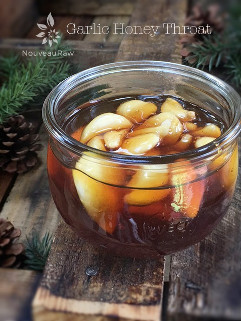

Garlic Honey Throat, Cold and Flu Remedy
Garlic Honey Throat, Cold and Flu Remedy

This is a great cold and flu remedy to have on hand!
Garlic…
is a powerful immune-booster. It is very effective against nasty bacterial, viral, and fungal infections. The antibiotic qualities of garlic appear to be a direct result of the allicin produced from raw, crushed garlic. This is destroyed by age and cooking – cooked garlic has virtually no antibiotic value although it still retains other benefits.
Honey…
also has antibacterial, antiviral, and anti-fungal properties, so when you combine the two, you’ve got a great aid to help you fight sore throats, colds, or the flu.
So here’s a tip: when infused in honey, raw garlic becomes far more palatable. Tasty even! So keep a jar of this on hand at all times. At the first sign of a sore throat, cold or flu, start popping honey infused garlic and try to eat one clove every hour or two all day long. Decrease the amount the next day, but continue to eat a couple of cloves a day until all better.
So make up a jar of this and keep it in your fridge so that you will be all set for winter (or the next time you start to feel sick). The garlic is ready to eat after a few days but tastes even better over time. You can replace the garlic cloves with fresh ones whenever you take some out, so the jar remains pretty much full at all times. Enjoy your combination of garlic and honey to soothe your cough.
WARNING:
The consumption of honey during the first year of life has been identified as a risk factor for infant botulism. Infant botulism occurs when a baby eats living bacteria or its spores, and they grow in the baby’s gastrointestinal tract. The most common cause of infant botulism is eating honey or corn syrup. Please research this for more detailed information. Here is what the Mayo Clinic has to say about it as well.
Recipe adapted from Healthy Green Kitchens
- 1-pint jar, plastic or glass lid
- 1 cup of peeled garlic, separated into cloves
- raw local honey to fill your glass jar of choice
Preparation:
- Fill the jar with garlic cloves (leave about 1 1/2″ of headspace from the top of the jar), pour the honey over the garlic (leave about 1/2-1″ of head space between the honey and lid), and place it in the fridge.
- Allow mixture to infuse for a couple of days before using.
- Be sure to start with fresh garlic. All cloves should be firm. Sniff, there should be no smell of mold, hardly any smell at all. And no sprouts, when sprouting starts, it can be bitter.
- Look for garlic that is sold loose. Therefore you can select healthy, solid bulbs. Garlic bulbs should be plump and compact with unbroken skin. Avoid those with damp or soft spots.
- At the first sign of illness, start eating a clove every hour or two. Aim for about 6 cloves per day.
- The honey can be taken on its own by the spoonful as a cough syrup.
- You could also mix a teaspoon of the honey with some raw apple cider vinegar and hot water and drink this as a tonic when you’re sick; feel free to add a dash of cayenne pepper, too- this is excellent for your sinuses.
- If you have a sensitive stomach or unsure of how your body will respond to eating a whole garlic close, cut in 1/4 or 1/2 and test a small piece first.
Attention:
I had a reader send me a private email asking about botulism and if a person runs a risk of that when soaking garlic in honey. I spent a great deal of time searching Google to find a specific answer, but I couldn’t find anything black and white regarding it.
There are a lot of warnings out there about botulism when it comes to soaking garlic in olive oil but not much about garlic in honey. As mentioned above I found this recipe on Healthy Green Kitchen. This site is run by a woman who has a degree in naturopathic medicine. I contacted her to see what her take is and she felt that there wasn’t an issue and has had a jar in her fridge for 2 years now with no problems. I didn’t stop there though. I put out 4 different emails inquiring about the subject matter at hand. I contacted:
Centers for Disease Control and Prevention (CDC) and the Agency for Toxic Substances and Disease Registry (ATSDR). Who replied…
Thank you for your inquiry to CDC-INFO. In response to your request for information on your risk for botulism, we are pleased to provide you with the following information.
While CDC-INFO was unable to locate specific information on the risk for botulism regarding the recipe you cited, we can provide you with the following information.
There are many things you can do to prevent botulism.
First, follow strict hygienic (cleanliness) procedures when canning food at home. This will help keep bacteria from getting into the food. Always follow proper home canning recipes, including the use of pressure canners or cookers when recommended. Boiling home-canned foods for 10 minutes before eating them will inactivate botulinum toxin.
You should also:
* Keep oils infused with garlic or herbs in the refrigerator.
Don’t feed honey to babies less than 1-year-old. This is because honey may contain the spores that can produce botulism bacteria.
Most cases of foodborne botulism come from foods that have been canned at home, especially home-canned vegetables. The bacteria that cause botulism can grow in foods that are not canned properly. In Alaska, fermented fish and other traditional aquatic game foods are the most common cause of botulism. Honey is a common cause of infant botulism.
Wound botulism has been linked to the use of black-tar heroin. It is most common in California.
As a public health message, the CDC would like to remind you that in order to prevent wound botulism, you should:
* See your doctor right away, if you have an infected wound; and
* Not inject street drugs.
To learn about how to can food safely, you can get information from:
* Your county or state health department;
* The Center for Food Safety and Applied Nutrition, at the United States Food and Drug Administration (FDA); or
* The United States Department of Agriculture (USDA).
2nd email -Mayo Clinic.com, who replied…
Dear Amie Sue,
Thank you for your e-mail. I was unable to find information on our site to answer your specific inquiry. I’m sorry we’re unable to assist you. We suggest you try a Google search for your inquiry. Thanks for visiting. We are always adding new content to our site so we hope you will continue to be a frequent visitor!
Best wishes, Stacey – Mayo Clinic Online Services
3rd email – Penn State Department of Food Science, who replied…
Amie Sue, It would not be a risk as long as it was stored in the refrigerator. I would be worried that someone would see honey in the refrigerator and then move it to room temperature storage, where it would be a botulism risk.
Martin Bucknavage
- Senior Food Safety Extension Associate
- Penn State Department of Food Science
- Penn State Extension
- 438 Food Science Building
- University Park, PA 16802
Disclaimer
This website is not intended to provide medical advice. All content, including text, graphics, images, and information available on this site is for general informational, entertainment, and educational purposes only. The content is not intended to be a substitute for professional diagnosis or treatment. The author of this site is not responsible for any adverse effects that may occur from the application of the information on this site. You are encouraged to make your own healthcare decisions, based on your research and in partnership with a qualified healthcare professional.
© AmieSue.com